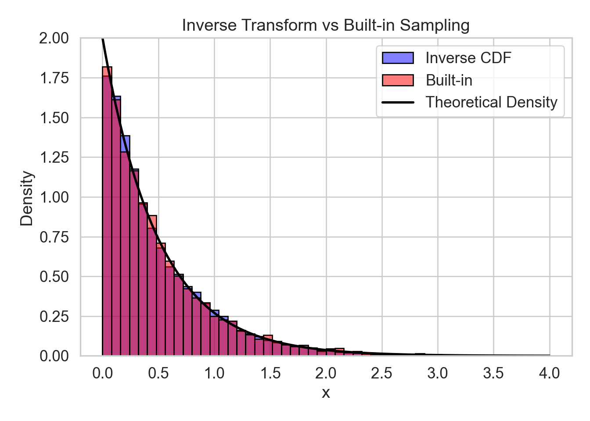

import numpy as np
import matplotlib.pyplot as plt
# Set seed for reproducibility
np.random.seed(42)
# Population: non-normal (exponential) to highlight the CLT
population = np.random.exponential(scale=1.0, size=100000)
n = 30 # Fixed sample size
# Function to simulate means
def sample_means(num_samples):
return [np.mean(np.random.choice(population, n, replace=True)) for _ in range(num_samples)]
# Simulate with increasing number of samples
means_10 = sample_means(10)
means_100 = sample_means(100)
means_1000 = sample_means(1000)
# Plot
fig, axs = plt.subplots(1, 3, figsize=(15, 4))
colors = ['skyblue', 'orange', 'seagreen']
samples = [means_10, means_100, means_1000]
titles = ["10 Samples", "100 Samples", "1000 Samples"]
for ax, data, color, title in zip(axs, samples, colors, titles):
ax.hist(data, bins=10 if title == "10 Samples" else 20 if title == "100 Samples" else 30,
color=color, edgecolor='black')
ax.set_xlim(0, 3)
ax.set_title(title)
ax.set_xlabel("Sample Mean")
ax.set_ylabel("Frequency")
plt.tight_layout()
plt.show()Exercises
Problem 1
A university wants to study the average number of hours students sleep during finals week. They decide to gather data by surveying students.
What is the population of this study?
Give an example of a possible sample.
Why is it important to distinguish between a population and a sample?
Show solutions
The population is all students at the university during finals week. Recall that tthe population is the whole group we want to study.
A sample might be 150 students selected randomly from various departments. A sample cam really be **any* subset of the population, however, that does not mean that all samples are created equally. (This will be discussed more later)
It’s important to distinguish between a population and a sample because we usually cannot study the entire population. Instead, we use a sample to make inferences about the population. Understanding this distinction helps us evaluate the reliability and limitations of our conclusions.
Problem 2
A university wants to study the average number of hours students sleep during finals week. They decide to gather data by surveying students.
Suppose the researcher only surveys students from the university’s Mathematics department. What potential issue arises from this sampling choice?
Show solutions
Surveying only Mathematics students would certainly introduce some degree of sampling bias. We can’t be certain that the sleep habits of students in the maths department would have similar habits to the average student. There could for instance be differences in workload and culture from one department to the next. Thus, we can’t safely generalise the findings, by looking only at the maths department.
Problem 3
Suppose a public health organization wants to estimate the average number of daily steps taken by adults in a large city.
What are some key features the sample should have to be considered representative of the adult population.
In what way could one go about achieving a representative sample?
Show solutions
A representative sample needs to reflect the characteristics, proportions, and diversity of the of the entire population. I.e. there people of different ages, sexes and lifestyles should be proportionally (at least somewhat proportionally) represented in the sample, for it to be representative of the entire population.
The simplest way is to just select randomly from the entire population. Even though each pick is completely random, by the law of large numbers, once enough people are picked at random, the sample distribution should will approach the population’s. This isn’t always certain to work, as it mostly relies on having a sample of adequate size, as well asd needing to ensure that one is sampling form the entire population at random, and not a subset of it.
One useful method could be stratified sampling, where the population is divided into key subgroups (e.g., age groups, districts), and individuals are randomly selected from each subgroup. This ensures balanced representation across important variables.
Problem 4
Like in Problem 3, suppose a public health organization wants to estimate the average number of daily steps taken by adults in a large city. Suppose now also that some people choose not to respond. Could this possibly cause problems for the surveyors?
Show solutions
Imagine if there was some significant distinction in attributes between the people that chose to reply, and of those who chose not to. I.e., those who reply and those who don’t aren’t necessarily random. This non-randomness in response could veyr well compromise the representative sample that we are looking for. Imagine that less active adults were less likely to respond than more active ones. In a scenario like this, the public health organisation might end up overestimating the average number of daily steps.
Problem 5
A new coffee shop wants to know what people think about their service. They post a feedback form on their website and collect responses for a week.
Identify one source of sampling bias in this method.
Propose an alternative approach that would reduce sampling bias.
Show solutions
The main bias comes from self-selection: only people who visit the website and feel strongly (either positively or negatively) are likely to respond. This could lead to results that do not reflect the general customer base.
A better approach would be to randomly select customers in-store and ask them to complete a short survey, or to distribute surveys with receipts to all customers during the week, encouraging broad participation. This reduces self-selection bias and captures more typical opinions.
Problem 6
You are conducting a study on the eating habits of university level students in Bergen. You want your results to generalize well to the full student population.
Suggest a sampling method that would help ensure your sample is representative.
What steps could you take to avoid overrepresenting certain types of students (e.g. from large universities or urban areas)?
What issues could you run into if you only sampled students from NHH?
Show solutions
A good choice would be stratified random sampling. You could divide the college student population by school type (e.g., large universities, community colleges, private colleges), and then randomly select students from each group proportionally.
To avoid overrepresentation, ensure that each subgroup is sampled in proportion to its size in the overall student population. For example, if 30% of students are from smaller schools, then 30% of your sample should come from smaller schools too. You might also apply weighting to adjust for any imbalance in response rates after collecting the data.
Though it may be more convenient for you to only sample NHH students, we are trying to consider the eating habits of the general student in Bergen. Looking only at NHH could very well lead to biased results, especially considering that NHH is far less diverse in field of study than institutions like UiB and HVL. a random sampling of all students, or a stratified sampling, would clearly lead to much more statistically rigorous results in a case liek this.
Problem 7
A news article reports: “80% of people in the city support the new policy,” based on a poll conducted by a political advocacy group on their own social media page.
Explain why the results of this poll may be biased.
Suggest a way to improve the sampling process to obtain more reliable public opinion data.
Suppose a truly random sample of city residents shows only 45% support for the policy. How does this compare to the original poll, and what does it suggest?
Show solutions
The sample is likely biased because it seems likely that very few non-followers of the party would respond to this survey, as the poll was conducted on their page. These followers may already share similar views, making them not representative of the broader city population.
A better approach would be to conduct a randomized phone or email survey using a list of registered voters or residents. Alternatively, partnering with an independent polling organization that uses techniques like random digit dialing or address-based sampling could provide more reliable and representative data.
This suggests that the original 80% figure was inflated due to sampling bias. A truly random sample showing only 45% support reveals that the earlier poll was not representative of the general population. It highlights how non-random or biased sampling can lead to misleading conclusions.
Problem 8
Suppose you’re studying how the number of hours a student studies per week relates to their exam score. You propose the following relationship:
\[ \text{Exam Score} = 5 \times \text{Study Hours} + \varepsilon \]
What is the deterministic part (non-random part) of this model?
What does the error term \(\varepsilon\) represent?
Show solutions
- The deterministic part is:
\[ \text{Exam Score} = 5 \times \text{Study Hours} \]
This is the part of the model that gives a fixed prediction based only on the number of study hours. I.e. the part of the model that is not randomly determined.
- The error term \(\varepsilon\) accounts for everything else that affects the exam score but isn’t included in the model — such as test anxiety, sleep, prior knowledge, or randomness. It reflects unexplained variation.
Problem 9
You collect data on 5 students and fit a statistical model to predict exam scores from study hours. The model predicts:
\[ \hat{y}_i = 5 \times x_i \]
where \(x_i\) is the number of hours student \(i\) studied. Karl studied for 6 hours, and his final score ended up being 35.
What was Karl’s predicted score?
What is the residual for Karl?
Show solutions
- Since Karl studied for 6 hours we get that \(x_i=6\). Now we have everything we need to compute the predicted score. The predicted score is:
\[ \hat{y}_i = 5 \times 6 = 30 \]
- The residual is the difference between the predicted score and the actual score. Recall that the predicted score we found in a) was 30 and the actual score was 35. With this we can compute the residual. The residual is:
\[ \text{Residual} = y_i - \hat{y}_i = 35 - 30 = 5 \]
This means Karl did 5 points better than the model predicted.
Problem 10
A model assumes the error terms \(\varepsilon_1, \varepsilon_2, \dots, \varepsilon_n\) are identically distributed.
What does it mean for the error terms to be identically distributed?
Why might this assumption be important when building a statistical model?
Show solutions
Identically distributed means that each error term comes from the same probability distribution — e.g., all errors are normally distributed with the same mean and variance.
This assumption ensures that the variability is consistent across observations. If errors had different distributions (e.g. wider for some groups than others), then the model’s predictions could be unreliable or biased for certain parts of the data.
Problem 11
Now assume the model from problem 10 also requires the error terms \(\varepsilon_1, \varepsilon_2, \dots, \varepsilon_n\) to be independent. This means the error terms (residuals) are now independent and identically distributed (i.i.d.).
What does it mean for error terms to be independent?
Provide a situation where this assumption might be violated.
Show solutions
Independent error terms mean that the value of one error term does not provide any information about another. The errors are not correlated and have no systematic pattern between them.
A violation might occur in time series data (e.g. daily stock prices), where today’s error may be related to yesterday’s. Another example is when data points come from the same individual (e.g. repeated measures), introducing dependency between observations.
Problem 12
You take a random sample of 50 students from a large university to estimate the average number of hours they sleep per night. The sample mean is 6.8 hours, while the true population mean (which you happen to know) is 7.1 hours.
What is the sampling error in this situation?
Why does sampling error occur, even when using random sampling?
Show solutions
- Recall that to find the sampling error we need ot subtract the population value \(\mu\) form the sample value \(\overline{y}\). We see here that he nsample mean is given by the average we find through our experiment \(\overline{y}=6.8\) and the population value is also given \(\mu=7.1\).
\[ \text{Sampling error} = \overline{y} - \mu = 6.8 - 7.1 = -0.3 \] I.e. our sample underestimated the true value by 0.3 hours, which is 18 minutes.
- Sampling error occurs because we are only using a subset of the population, and that subset may not perfectly reflect the whole population due to natural variability. Even random samples will vary from sample to sample, producing different estimates.
Problem 13
Suppose you repeatedly take samples of size 30 from a population with a true mean of 50 and plot the means of those samples.
What is this collection of sample means called?
As you increase the number of samples, what does the shape of this distribution tend to look like?
Show solutions
The collection of sample means is called the sampling distribution of the sample mean.
According to the Central Limit Theorem, the sampling distribution will tend to become approximately normal, even if the original population is not normally distributed — provided the sample size is large enough.
Have a look at the figures below to see an example of how a sample distribution may look and develop as an experiment is repeated. Note how teh figures approach a bell curve.
Problem 14
You are estimating the average test score for a population. The population has a standard deviation of \(\sigma = 10\).
What is the standard deviation of the sample mean (also called the standard error) if you take a sample of size \(n = 25\)?
What happens to the standard error if you increase the sample size to \(n = 100\)?
Show solutions
- Recall that so find the standard deviation of the sample mean we use the formula \[SD\left(\overline{Y}_n \right)=\frac{\sigma}{\sqrt{n}} \] Since we already know \(n=25\) and \(\sigma=10\) we can easily compute the standard error. The standard error is given by:
\[ SD\left(\overline{Y}_n \right) = \frac{\sigma}{\sqrt{n}} = \frac{10}{\sqrt{25}} = \frac{10}{5} = 2 \]
- If \(n = 100\):
\[ \text{SE} = \frac{10}{\sqrt{100}} = \frac{10}{10} = 1 \]
So, increasing the sample size reduces the standard error, meaning the sample mean becomes more precise.
Problem 15
Imagine you take 1,000 different random samples, each of size 40, from the same population. You compute the mean for each sample and plot a histogram.
What does the center of the sampling distribution represent?
How does the spread of this histogram relate to sample size?
Show solutions
The center of the sampling distribution represents the population mean (or it will at least be very close to the population mean). On average, the sample means will be centered around the true population mean.
The spread of the sampling distribution — measured by the standard error — decreases as the sample size increases. This means larger samples lead to less variability in the sample mean.I.e., we will see the the shape of the distribution close in on the population mean as the the sample size incereases.
Take a look at the representation below to get an idea. The red line represents the population mean, and as the sample size increases the distribution of sample means becomes tighter around it, i.e. more observations are relatively close to the true population mean when n increases. This is the idea when we compute the standard error and notice that it decreases in n. this is also an effective illustration of the central limit theorem and the law of large numbers.
import numpy as np
import pandas as pd
import seaborn as sns
import matplotlib.pyplot as plt
# Set seed for reproducibility
np.random.seed(123)
# Skewed population: Exponential
population = np.random.exponential(scale=1.0, size=100000)
mu_true = np.mean(population)
# Function to generate sampling distributions
def simulate_means_by_n(n, reps=1000):
sample_means = [np.mean(np.random.choice(population, n, replace=True)) for _ in range(reps)]
return pd.DataFrame({
'sample_mean': sample_means,
'sample_size': f'n = {n}'
})
# Generate data
df = pd.concat([
simulate_means_by_n(5),
simulate_means_by_n(30),
simulate_means_by_n(100)
])
# Plot sampling distributions
sns.set(style="whitegrid", font_scale=1.2);
g = sns.FacetGrid(df, col="sample_size", sharey=False, height=4, aspect=1.2);
g.map(sns.histplot, "sample_mean", kde=True, stat="density", bins=30, color="lightblue", edgecolor="white");
# Add vertical line for population mean
for ax in g.axes.flat:
ax.axvline(mu_true, color="red", linestyle="--", linewidth=1);
g.set_axis_labels("Sample Mean", "Density");
g.fig.suptitle("Effect of Sample Size on the Sampling Distribution of the Mean", y=1.05);
plt.tight_layout();
plt.show();Problem 16
You simulate the following experiment using software: (You don’t need to do this in Python yourself, but it could be a neat exercise to see it for yourself fully.)
- Draw 1,000 random samples of size \(n = 30\) from a population with mean \(\mu = 100\) and standard deviation \(\sigma = 15\).
- For each sample, compute the sample mean and store it.
- Plot the histogram of all 1,000 sample means.
What shape do you expect the histogram of sample means to have?
Approximately where should the center of the histogram be?
If you were to repeat the experiment with a larger sample size \(n = 100\), what change would you expect in the spread of the histogram?
Show solutions
The histogram should be approximately normal (bell-shaped) due to the Central Limit Theorem, even if the original population is not normal.
The center should be at or very near the population mean, which is \(\mu = 100\).
The spread — measured by the standard error — would decrease. A larger sample size makes the sample means more concentrated around the population mean. Mathematically: (\(SE\) is an equivalent notation for the standard error)
\[ \text{SE}_{30} = \frac{15}{\sqrt{30}} \approx 2.74, \quad \text{SE}_{100} = \frac{15}{10} = 1.5 \]
Problem 17
A researcher wants to estimate the average amount of money undergraduate students at a large university spend on food per week. She:
- Randomly selects 40 students and records their weekly food spending.
- Computes the sample mean: \(\mu=\$52.80\).
- Knows from prior studies that the population standard deviation is approximately \(\sigma=\$12\).
What is the sampling error if the actual population mean is $50?
What is the standard error of the sample mean?
Explain what would happen to the standard error if she used a sample of 160 students instead.
Is this one sample mean likely to equal the population mean exactly? Why or why not?
Show solutions
- We have a sample mean \(\overline{y}=52.80\), so then we should just subtract the population mean to compute the sampling error.
\[ \text{Sampling error} = 52.80 - 50 = 2.80 \]
- We can easily compute this as we already know the population standard deviation \(\sigma=12\), and the sample size \(n=40\).
\[ \text{SE} = \frac{12}{\sqrt{40}} \approx \frac{12}{6.32} \approx 1.90 \]
- If \(n = 160\):
\[ \text{SE} = \frac{12}{\sqrt{160}} \approx \frac{12}{12.65} \approx 0.95 \]
So the standard error would shrink, improving precision.
- It is unlikely that the sample mean equals the population mean exactly. Due to sampling variability, different random samples will produce different estimates, though they should cluster around the true mean if the sample is representative. It will also be **likelier* that there is less of an absolute difference between the sample mean and population mean as the sample size increases, as this will reduce standard error. As illustrated in c), this effect improves precision.
Problem 18
You’re given a population distribution with unknown form. However, you’re told the population has finite mean \(\mu\) and variance \(\sigma^2\). You draw a simple random sample of size \(n\), and compute the sample mean \(\overline{X}_n\).
According to the Central Limit Theorem (CLT), what is the asymptotic distribution of \(\overline{X}_n\) as \(n \to \infty\)?
What does the CLT not guarantee when \(n\) is small?
Illustrate the two following results given the sample of size \(n\) given in this problem.
\[E\left[\overline{X}_n\right]=\mu\]
- \[ Var \left[\overline{X}_n \right]=\frac{\sigma^2}{n} \]
Show solutions
- The CLT tells us that a that a sequence of independent and identically distributed (i.i.d) random variables \(X_1,\dots, X_n\), with a an expected value \(\mu\) and a finite variance \(\sigma^2\) will have their average converge to a normal distribution, when \(n\) approaches infinity (\(n\rightarrow \infty\)). The average of these \(n\) variables we give as normal
\[\overline{X}_n=\frac{1}{n}\sum^n_{i=1}X_i \] The normal distribution is decided by two parameters; mean and variance. So to find exactly which distribution the CLT has \(\overline{X}_n\) converge to we need the mean and variance. The rule from the lectures tells us that the mean of this normal distribution will remain the same as for \(X_i\), i.e. \(\mu\) and that the variance will converge to \(\frac{\sigma^2}{n}\)
In short the CLT then says:
\[ \bar{X}_n \xrightarrow{d} \mathcal{N}\left(\mu, \frac{\sigma^2}{n}\right) \]
When \(n\) is small, the sample mean may not be approximately normally distributed. The CLT is an asymptotic result, so the normal approximation improves with larger \(n\). If the population distribution is skewed or heavy-tailed, then the distribution of \(\overline{X}_n\) is typically farther from the asymptotic normal distribution.
The first thing we need to do for both problems is to recall how we’ve defined \[\overline{X}_n\]. By substituting and doing some algebra we will arrive at our desired results.
\[ E\left[\overline{X}_n\right]=E\left[\frac{1}{n}\sum^n_{i=1}X_i\right] \]
For expected values we are allowed to move constants such as \(\frac{1}{n}\) outside of our brackets. We also know that the sum of an expectation is the expectation of teh sum, meaning that we can move the sum outside of our brackets as well.
\[ E\left[\frac{1}{n}\sum^n_{i=1}X_i\right]=\frac{1}{n}\sum^n_{i=1}E \left[X_i \right] \] Now we can take advantage of all \(X_i\) being i.i.d., meaning they are identically distirbuted and will thus have the same mean, namely \(\mu\).
\[ \frac{1}{n}\sum^n_{i=1}E \left[X_i \right]=\frac{1}{n}\sum^n_{i=1}\mu=\frac{n}{n}\mu=\mu\] I.e.
\[E\left[\overline{X}_n\right]=\mu\] ii) We essentially repeat the process here.
\[ Var \left[\overline{X}_n \right] = Var \left[\frac{1}{n}\sum^n_{i=1}X_i \right] \] For variances we are allowed to move constants such as \(\frac{1}{n}\) outside of our brackets if we square them. I.e.
\[Var[aY]=a^2Var[Y] \] (For those not entirely convinced by this, try to compute it bye using that \(Var[Y]=E[Y^2]-(E[X])^2\))
We also have that the sum of a variance is the variance of the sum as long as the random variables included in the sum are mutually independent of each other. In this case all our variables are i.i.d., meaning that the independence requirement is met; and thus we can move the sum outside of the brackets as well. We then get:
\[ Var \left[\frac{1}{n}\sum^n_{i=1}X_i \right] = \frac{1}{n^2}\sum^n_{i=1}Var[X_i] \]
All of our \(X_i\) are identically distributed with the same variance; \(\sigma^2\):
\[ \frac{1}{n^2}\sum^n_{i=1}Var[X_i] = \frac{1}{n^2}\sum^n_{i=1}\sigma^2=\frac{n}{n^2}\sigma^2=\frac{\sigma^2}{n} \] And we are done
\[ Var \left[\overline{X}_n \right]=\frac{\sigma^2}{n} \]
Problem 19
You want to apply the Central Limit Theorem to a dataset of measurements collected from a machine. However, before proceeding, your colleague reminds you that “the CLT has assumptions!”
List the assumptions required for the CLT to hold for sample means.
Suppose the machine’s output is not independent from one sample to the next. Can you still apply the CLT?
Show solutions
- The main assumptions for the classical CLT are:
- The data are independent
- The data are identically distributed
- The population has finite mean and finite variance
- If the data are not independent (e.g., time-dependent or autocorrelated), then the classical CLT may not apply. There are generalized versions of the CLT for dependent data, but in this setting, using the standard version would lead to misleading conclusions about the sampling distribution.
Problem 20
You simulate 10,000 observations from each of the following distributions:
- Exponential(1)
- Uniform(0, 1)
- Bernoulli(0.2)
For each distribution, you compute the sample mean of many repeated samples of size \(n = 50\). What assumptions would you have to make in this case to be certain?
For each distribution above, is the CLT applicable? Why?
What would you expect the distribution of the sample means to look like?
Show solutions
- Our requirements to use CLT are:
- The distributions have finite mean and variance
- We have a random sample of fixed size
- The samples are independent and identically distributed
In all cases we have that the distributions have finite means and variances. Since we’re simulating from the same distributions, we can be certain they are identical, but we still assume independence (using a random draw with Python for example this requirement is met). It’s also clear that we have random samples of a fixed size in this case as our simulation is takes the mean of assorted samples of 50.
- In all three cases, the distribution of sample means should be approximately normal, centered at the true population mean, with smaller spread as \(n\) increases. The exponential is heavily skewed, so its sample mean distribution may look less normal than the others, but should still be roughly bell-shaped.
Problem 21
Let \(X_1, \dots, X_n\) be i.i.d. random variables from a distribution with mean \(\mu = 3\) and variance \(\sigma^2 = 4\). You take a random sample of size \(n = 100\).
Use the CLT to approximate the distribution of the sample mean \(\overline{X}\).
Use the CLT to approximate the distribution of the sum \(S_n = \sum_{i=1}^n X_i\).
Hint: \(S_n=n\overline{X}\) which can be used for computation
Show solutions
- By CLT:
\[ \overline{X} \sim \mathcal{N}\left(3, \frac{4}{100}\right) = \mathcal{N}(3, 0.04) \]
- Since \(S_n = n\overline{X}\), and \(\overline{X} \sim \mathcal{N}(3, 0.04)\), then:
\[ S_n \sim \mathcal{N}(300, 400) \] \[E[S_n]=\cdots=\frac{n}{n}\sum^n_{i=1}\mu=100\mu=300 \\ Var[S_n]=\cdots=\frac{n^2}{n^2}\sum^n_{i=1}\sigma=100\sigma=400 \]
For those wanting an extra challenge, try finding a general rule for how the mean and variance of a normal distribution of a sum such this would scale by multiplying with a constant \(a\)
Problem 22
You are studying the average number of daily steps taken by students at a university.
You collect a random sample of 100 students and calculate the mean number of steps. What is this quantity called?
Before collecting data, you write down the formula you plan to use to estimate the mean from any future sample. What is this formula called?
What is the term for the true, but unknown, average number of steps taken by all students at the university (for instance \(\theta\))?
Show solutions
- This is an estimate — a realized numerical value from a specific sample.
- This is an estimator — a rule or formula for calculating an estimate.
- This is the parameter — the true population quantity we aim to estimate.
Problem 23
Let \(\hat{\theta}\) be an estimator for a population parameter \(\theta\).
Define what it means for \(\hat{\theta}\) to be an unbiased estimator of \(\theta\).
Define what it means for \(\hat{\theta}\) to be a consistent estimator of \(\theta\).
Are these two properties related? Can an estimator be one but not the other?
Show solutions
An estimator \(\hat{\theta}\) is unbiased if \(E[\hat{\theta}] = \theta\).
An estimator is consistent if \(\hat{\theta} \to \theta\) in probability as the sample size \(n \to \infty\). I.e. as the sample size \(n\) increases, the estimator \(\hat{\theta}\) will approach the true paramter value \(\theta\).
Yes, they are distinct properties. An estimator can be:
- Unbiased but not consistent (e.g., large variance that doesn’t shrink with \(n\)).
- Biased but consistent (e.g., estimators that converge with increasing \(n\), even if not centered).
Problem 24
Let \(X_1, \dots, X_n\) be iid with man \(\mu\) and variance \(\sigma^2\). Consider the sample variance:
\[ S_n^2 = \frac{1}{n} \sum_{i=1}^n (X_i - \bar{X})^2 \]
Is \(S_n^2\) an unbiased estimator of \(\sigma^2\)? Explain.
Suggest an adjusted estimator that is unbiased, and write the formula.
Given that \[E\left[\sum^n_{i=1}(X_i-\overline{X})^2\right]=(n-1)\sigma^2 \] Use this to show that the sample variance \(S^2\) is an unbiased estimator for \(\sigma^2\).
When
\[S^2=\frac{1}{n-1}\sum^n_{i=1}(X_i-\overline{X})^2\]
Show solutions
No, \(S_n^2\) is biased. Its expected value is slightly less than \(\sigma^2\), especially for small \(n\). This is due to the fact that \(\bar{X}\) is estimated from the same data and introduces extra variability.
The unbiased estimator of variance is:
\[ S^2 = \frac{1}{n - 1} \sum_{i=1}^n (X_i - \overline{X})^2 \] c)
Using the provided identity:
\[ E[S^2] = E\left[\frac{1}{n-1} \sum_{i=1}^n (X_i - \overline{X})^2\right] = \frac{1}{n-1} \cdot (n - 1)\sigma^2 = \sigma^2 \]
So \(S^2\) is unbiased.
Problem 25
Suppose you are comparing two estimators of a parameter \(\theta\):
- Estimator A is unbiased, but has high variance.
- Estimator B is biased, but the bias gets smaller as the sample size grows, and the variance is low.
Which estimator would you prefer if you care about consistency?
Which estimator would you prefer if you care most about low error in small samples?
Can Estimator B be consistent, even though it is biased?
Show solutions
Estimator B is preferable if it is consistent, because consistency ensures convergence to the true value as \(n \to \infty\).
In small samples, Estimator A may perform poorly due to high variance. Estimator B may be preferred due to lower overall error.
Yes — bias and consistency are not mutually exclusive. Estimator B can be biased but consistent if the bias vanishes as \(n \to \infty\).
Problem 26
Consider the properties of the sample mean \(\overline{X}\) and sample variance \(S^2\) as estimators.
Are both unbiased? Under what conditions?
Are both consistent?
What happens to these properties when data are not iid?
Show solutions
\(\overline{X}\) is always unbiased for \(\mu\) if the mean exists. \(S^2\) is unbiased for \(\sigma^2\) if the data are iid and \(\sigma^2\) exists.
Both are consistent if the data are iid and the mean and variance exist (mean for \(\overline{X}\), variance for \(S^2\)).
If data are not iid:
- Bias may be introduced (e.g., if dependent observations).
- Consistency may fail if dependence inflates variance or reduces effective sample size.
Problem 27
Suppose you observe independent data points \(X_1, X_2, \dots, X_n\) drawn from a distribution with a density \(f(x; \theta)\), where \(\theta\) is an unknown parameter.
Define the likelihood function \(L(\theta)\) based on this data.
Explain why, when maximizing the likelihood, we often instead maximize the log-likelihood.
Show solutions
- The likelihood is the joint probability (or density) of the observed data, viewed as a function of \(\theta\):
\[ L(\theta) = \prod_{i=1}^n f(X_i; \theta) \]
- We often maximize the log-likelihood because:
- It turns a product into a sum: \(\log L(\theta) = \sum_{i=1}^n \log f(X_i; \theta)\)
- It’s easier to differentiate and solve
- It avoids numerical issues caused by multiplying many small probabilities
Problem 28
Let \(X_1, \dots, X_n \sim \text{iid Geometric}(p)\), where \(p \in (0,1)\) is the probability of success. The pmf is:
\[ P(X = k) = (1 - p)^{k - 1} p, \quad k = 1, 2, 3, \dots \]
Write the log-likelihood function for the observed sample.
Derive the maximum likelihood estimator \(\hat{p}\).
Show solutions
\[ L(p) = \prod_{i=1}^n (1 - p)^{X_i - 1} p = (1 - p)^{\sum (X_i - 1)} p^n \]
\[ \Rightarrow \ell(p) = \log L(p) = (n \log p) + \left( \sum^n_{i=1} (X_i - 1) \right) \log(1 - p) = n \log p + (n \bar{X} - n) \log(1 - p) \]
- Differentiate:
\[ \frac{d\ell}{dp} = \frac{n}{p} - \frac{n \bar{X} - n}{1 - p} \Rightarrow \frac{1}{p} = \frac{\bar{X} - 1}{1 - p} \Rightarrow \hat{p} = \frac{1}{\bar{X}} \]
So, the MLE is \(\hat{p} = \dfrac{1}{\overline{X}}\).
Problem 29
Suppose you observe \(X_1, \dots, X_n \sim f(x; \theta)\), where \(f(x; \theta)\) is a known family of distributions.
Why must the data be for the data to be iid when using MLE?
What could go wrong if the data are not iid?
Suppose the true distribution of the data is not in the family \(f(x; \theta)\). What consequences might this have?
Show solutions
- If the data are iid:
- The joint probability factorizes nicely as it will be a product of identical identities
- The likelihood simplifies
- The MLE behaves well and has known properties (e.g. consistency)
- If data are not iid:
- The likelihood expression is invalid or more complicated
- The MLE may be biased or inconsistent
- Inference based on the MLE may be misleading
- If the model is wrong (i.e., the true distribution isn’t in the family):
- The MLE still finds the “best-fitting” parameter within the family, but it’s not estimating the true parameter
- This is called model misspecification
- The MLE may converge to a value that minimizes some distance, but it’s not consistent for the true data-generating parameter
Problem 30
Let \(U \sim \text{Uniform}(0,1)\). You are told that it is possible to generate a random variable \(X\) from another distribution by transforming \(U\). This technique is called inverse transform sampling.
Suppose you want to generate random variables from an exponential distribution with parameter \(\lambda > 0\), which has CDF
\[ F(x) = 1 - e^{-\lambda x}, \quad x \ge 0 \]
Solve for the inverse of the CDF, \(F^{-1}(u)\), where \(u \in (0,1)\).
Let \(U \sim \text{Uniform}(0,1)\). Show that if we define \(X = F^{-1}(U)\), then \(X \sim \text{Exp}(\lambda)\).
What general steps does this illustrate about how inverse transform sampling works?
Show solutions
- Start with:
\[ F(x) = 1 - e^{-\lambda x} \Rightarrow u = 1 - e^{-\lambda x} \Rightarrow e^{-\lambda x} = 1 - u \Rightarrow -\lambda x = \log(1 - u) \Rightarrow x = -\frac{1}{\lambda} \log(1 - u) \]
Since \(1 - u \sim \text{Uniform}(0,1)\) as well, we often write:
\[ F^{-1}(u) = -\frac{1}{\lambda} \log u \]
- Let \(U \sim \text{Uniform}(0,1)\) and define \(X = -\frac{1}{\lambda} \log U\). We want to show that \(X \sim \text{Exp}(\lambda)\). Compute the CDF:
\[ P(X \le x) = P\left(-\frac{1}{\lambda} \log U \le x\right) = P\left(\log U \ge -\lambda x\right) = P\left(U \ge e^{-\lambda x}\right) = 1 - P(U < e^{-\lambda x}) = 1 - e^{-\lambda x} \] For the last step you must recall the CDF of a uniform distribution.\[U\sim \text{Uniform(a,b)}\]. In our case we have \(a=0\) and \(b=1\).
\[F_U(u)=P(U\leq u)=\frac{u}{b-a}=\frac{u}{1}=u\]
So the CDF of \(X\) matches the exponential distribution. Hence, \(X \sim \text{Exp}(\lambda)\).
- The inverse transform sampling procedure works as follows:
- Start with a known distribution with invertible CDF, \(F\)
- Sample \(U \sim \text{Uniform}(0,1)\)
- Set \(X = F^{-1}(U)\)
Then \(X\) has the distribution defined by \(F\). This method is particularly useful when direct sampling is hard, but the inverse CDF is known or easy to compute.
Problem 31
In this exercise, you will implement inverse transform sampling to generate samples from an exponential distribution with rate \(\lambda = 2\), and compare the result to samples generated by R’s built-in exponential sampler. (Feel free to use Python or any other language to do the same)
- Use the inverse CDF method to generate 10,000 samples from an \(\text{Exp}(\lambda = 2)\) distribution in R. Recall the inverse CDF is
\[ X = -\frac{1}{\lambda} \log(U) \]
Use R’s built-in function
rexp(n, rate = 2)to generate another 10,000 samples from the same distribution.Create a histogram of both sample sets on the same scale. Overlay the theoretical exponential density curve for comparison.
Comment on the similarity between the two sample sets and the theoretical distribution. What does this illustrate about inverse transform sampling?
Show solutions
- Generate using inverse CDF:
import numpy as np
# Set seed for reproducibility
np.random.seed(123)
n = 10000
lambda_ = 2
# Generate uniform random numbers
u = np.random.uniform(0, 1, n)
# Inverse transform sampling
x_inv = -np.log(u) / lambda_- Generate using built-in function:
x_builtin = np.random.exponential(scale=1/lambda_, size=n)- Plot histo}grams with density curve:
# Plot histogram for inverse transform samples
plt.hist(x_inv, bins=50, density=True, color=(0, 0, 1, 0.5), range=(0, 4),
label='Inverse CDF', edgecolor='black');
# Overlay histogram for built-in samples
plt.hist(x_builtin, bins=50, density=True, color=(1, 0, 0, 0.5), range=(0, 4),
label='Built-in', edgecolor='black');
# Theoretical density curve
x_vals = np.linspace(0, 4, 500)
y_vals = lambda_ * np.exp(-lambda_ * x_vals)
plt.plot(x_vals, y_vals, color='black', linewidth=2, label='Theoretical Density');
# Labels and legend
plt.title("Inverse Transform vs Built-in Sampling");
plt.xlabel("x");
plt.ylabel("Density");
plt.ylim(0, 2);
plt.legend(loc='upper right');
plt.tight_layout();
plt.show();
- The histograms of both sample sets are visually indistinguishable and both closely match the theoretical density curve of the exponential distribution. This illustrates that inverse transform sampling correctly reproduces the distribution, even when sampling is done indirectly via uniform draws.
Problem 32
Monte Carlo simulation is a technique used to approximate mathematical quantities through repeated random sampling.
What is the purpose of Monte Carlo simulation in statistics and data analysis?
How does the Law of Large Numbers justify the use of Monte Carlo methods?
Show solutions
Monte Carlo simulation is used to estimate expectations, probabilities, or other quantities that are hard (or impossible) to compute analytically. By simulating many random samples and averaging the results, we approximate the desired value.
The Law of Large Numbers states that the sample average converges to the expected value as the number of samples increases. In Monte Carlo methods, this justifies approximating:
\[ E[f(X)] \approx \frac{1}{n} \sum_{i=1}^n f(X_i) \]
where \(X_i \sim \text{Distribution of } X\).
Problem 33
Let \(X \sim \text{Uniform}(0, 1)\). You are interested in estimating \(E[X^2]\) using Monte Carlo simulation.
Generate three values: \(X_1 = 0.2, X_2 = 0.6, X_3 = 0.9\). Use these to compute a Monte Carlo estimate of \(E[X^2]\).
Compute the exact expected value of \(X^2\) when \(X \sim \text{Uniform}(0, 1)\), and compare.
Show solutions
- Estimate:
\[ E[X^2] \approx \frac{1}{3}(0.2^2 + 0.6^2 + 0.9^2) = \frac{1}{3}(0.04 + 0.36 + 0.81) = \frac{1.21}{3} \approx 0.403 \]
- To compute \(E[X^2]\) exactly, recall that for a continuous distribution like \(\text{Uniform}(0,1)\), we define \(E[g(X)]\), where \(g(X)\) is some function of the random variable \(X\), as
\[ \int^\infty_{-\infty}g(x)f(x)dx \] Where \(f(x)\) is the probility density function of the random variable \(X\).
For our distribution in this case \(g(x)=x^2\), and since it’s uniform on the support \((0,1)\), the pdf if given by:
\[f(x)= \begin{cases} 1, \quad for \ x\in(0,1) \\ 0, \quad other \end{cases} \]
Now we can use this to compute the exact value. Exact value:
\[ E[X^2] = \int_0^1 x^2 dx =\frac{1}{3}\left[x^3\right]^1_0= \frac{1}{3} \approx 0.333 \]
The estimate \(0.403\) is fairly close given the very small sample size.
Problem 34
You want to estimate the area under the curve \(y = \sqrt{1 - x^2}\) for \(x \in [0,1]\), which corresponds to a quarter of a unit circle. This will allow you to approximate \(\pi\).
Explain how you can estimate this area using Monte Carlo simulation.
Without using a computer, simulate with the following 5 random pairs:
\[ (x, y) \in \{ (0.1, 0.5), (0.4, 0.2), (0.6, 0.9), (0.3, 0.7), (0.9, 0.1) \} \]
Use these to estimate the area.
- What is the true area? How good is the estimate?
Show solutions
We sample points \((x, y)\) uniformly in the unit square \([0,1] \times [0,1]\), and count how many fall below the curve. The proportion of points under the curve estimates the area.
We check whether each point satisfies \(y \le \sqrt{1 - x^2}\), as only those will fall withing the quarter of the unit circle:
- \((0.1, 0.5)\): \(\sqrt{1 - 0.01} = \sqrt{0.99} \approx 0.995 > 0.5\): ✅
- \((0.4, 0.2)\): \(\sqrt{1 - 0.16} = \sqrt{0.84} \approx 0.916 > 0.2\): ✅
- \((0.6, 0.9)\): \(\sqrt{1 - 0.36} = \sqrt{0.64} = 0.8 < 0.9\): ❌
- \((0.3, 0.7)\): \(\sqrt{1 - 0.09} = \sqrt{0.91} \approx 0.954 > 0.7\): ✅
- \((0.9, 0.1)\): \(\sqrt{1 - 0.81} = \sqrt{0.19} \approx 0.436 > 0.1\): ✅
So, 4 out of 5 points were below the curve:
\[ \text{Estimated area} = \frac{4}{5} = 0.8 \] We know the area of the unit circle is \(\pi\), so the quarter we’ve estimated now should be a fourth of \(\pi\). As such we get:
\[\text{Estimated } \pi = 4 \times 0.8 = 3.2\]
- The true area is \(\frac{\pi}{4} \Rightarrow \pi \approx 3.14\). Our estimate of 3.2 is quite reasonable for only 5 points!
Problem 35
Use Monte Carlo simulation to estimate the integral:
\[ \int_0^1 \frac{1}{1 + x^2} dx \]
This integral equals \(\arctan(1) = \frac{\pi}{4}\). You should use Python to approximate this value.
Write python code to generate 100,000 samples \(X_i \sim \text{Uniform}(0, 1)\), and compute \(\frac{1}{100{,}000} \sum \frac{1}{1 + X_i^2}\).
Compare your result to the true value \(\frac{\pi}{4}\).
How would increasing the number of samples affect the estimate?
Show solutions
- Python code:
import numpy as np
# Set seed for reproducibility
np.random.seed(123)
n = 100000
x = np.random.uniform(0, 1, n)
# Monte Carlo estimate
estimate = np.mean(1 / (1 + x**2))
print(estimate)0.7852382622958511true_value = np.pi / 4
abs_error = abs(estimate - true_value)
print(true_value, abs_error)0.7853981633974483 0.00015990110159713744Output is typically very close, e.g., around 0.7854.
- As the number of samples increases, the estimate becomes more accurate and more stable, thanks to the Law of Large Numbers. The standard error of the mean decreases like \(1/\sqrt{n}\).
Problem 36
Suppose you observe the following dataset of 5 values:
\[ \{4.1,\ 5.3,\ 2.8,\ 6.0,\ 3.9\} \]
What is meant by a bootstrap sample? How is it created?
Generate two bootstrap samples from the dataset above by sampling with replacement.
Why is it important that bootstrap sampling is done with replacement?
Show solutions
A bootstrap sample is a new sample of the same size drawn with replacement from the original data. It mimics the idea of repeated sampling from the population by reusing the observed data.
Example bootstrap samples:
- Sample 1: {5.3, 2.8, 4.1, 4.1, 3.9}
- Sample 2: {6.0, 3.9, 5.3, 6.0, 2.8}
(Answers may vary depending on random sampling.)
- Sampling with replacement is crucial in bootstrap methods because we only have one sample from the population. Replacement introduces variability and simulates the act of drawing new samples from the population.
Problem 37
Let \(\hat{\theta} = \overline{X}\) be the estimator of the mean from the original sample:
\[ \{2.0,\ 4.0,\ 6.0,\ 8.0\} \]
Suppose you compute the means of three bootstrap samples (each of size 4 with replacement):
- Sample 1 mean: 4.5
- Sample 2 mean: 5.0
- Sample 3 mean: 3.5
What is the original estimate \(\hat{\theta}\)?
What is the bootstrap estimate of the bias?
What is the bias-corrected estimate?
Show solutions
- Original estimate:
\[ \hat{\theta} = \frac{2 + 4 + 6 + 8}{4} = 5 \]
- Bootstrap mean estimate:
\[ \hat{\theta}^* = \frac{4.5 + 5.0 + 3.5}{3} = 4.33\ldots \]
Bias estimate:
\[ \text{Bias} = \hat{\theta}^* - \hat{\theta} = 4.33 - 5 = -0.67 \]
- Bias-corrected estimate:
\[ \hat{\theta}_{\text{corr}} = \hat{\theta} - \text{Bias} = 5 - (-0.67) = 5.67 \]
Problem 38
Suppose you have the following data that you believe follows a Poisson distribution:
\[ \{2,\ 1,\ 0,\ 3,\ 2,\ 1,\ 4\} \]
Describe how you would perform a nonparametric bootstrap to estimate the sampling distribution of the sample mean.
Describe how you would perform a parametric bootstrap in this case.
Why might the parametric bootstrap be more appropriate here?
Show solutions
- Nonparametric bootstrap:
- Resample (with replacement) from the data to create many new samples.
- Compute the sample mean for each resample.
- Use the distribution of means to estimate uncertainty.
- Parametric bootstrap:
- Estimate the parameter of the assumed model: \(\hat{\lambda} = \text{mean of the data} = \frac{2+1+0+3+2+1+4}{7} = 1.86\)
- Generate new samples from \(\text{Poisson}(\hat{\lambda})\) of size 7.
- Repeat and compute the sample mean for each.
- Analyze the distribution of those means.
- If we believe the data is truly Poisson-distributed, the parametric bootstrap can capture the shape of the population better than the finite empirical distribution, especially with small sample sizes.
Problem 39
Consider the dataset:
import numpy as np
data = np.array([2.3, 1.9, 3.1, 2.8, 3.5])You are interested in the standard error of the median.
Use Pyhon to create 1,000 bootstrap samples of the same size and compute the median for each.
Use the bootstrap medians to estimate the standard error.
Plot the bootstrap distribution of the median.
Show solutions
import numpy as np
import matplotlib.pyplot as plt
# Set seed for reproducibility
np.random.seed(123)
# Original data
data = np.array([2.3, 1.9, 3.1, 2.8, 3.5])
n = len(data)
B = 1000
boot_medians = np.empty(B)
# Bootstrap loop
for i in range(B):
sample_i = np.random.choice(data, size=n, replace=True)
boot_medians[i] = np.median(sample_i)
# Standard error of the median
se_median = np.std(boot_medians)
# Plot
plt.hist(boot_medians, bins=20, density=True, color='skyblue', edgecolor='black');
plt.title("Bootstrap Distribution of Median");
plt.xlabel("Median");
plt.ylabel("Density");
plt.tight_layout();
plt.show();print(se_median)0.39077603560095653This gives an estimate of the sampling variability of the median using only the observed data.
Problem 40
The diameter of a randomly selected mechanical nut is a random variable with mean 10 mm and standard deviation 0.04 mm.
If \(\bar X\) is the sample mean diameter of a random sample of \(n=16\) nuts, where is the sampling distribution of \(\bar X\) centered, and what is the standard deviation of the \(\bar X\) distribution?
Answer the question in (a) for a sample size of \(n=64\) nuts.
For which of the two random samples from (a) or (b), is \(\bar X\) more likely to be within 0.01 mm from 10 mm? Explain your reasoning.
Suppose the distrution of the diameter is normal.
Calculate \(P(9.99\le \bar X \le 10.01)\) when \(n=16\).
How likely is it that the sample mean diameter exceeds 10.01 when \(n=25\).
Show solutions
Centered at 10 with standard deviation \(\sigma/\sqrt{n}=0.04/\sqrt{16}= 0.01\).
Centered at 10 with standard deviation \(\sigma/\sqrt{n}=0.04/\sqrt{64}= 0.005\).
With less variability, the second sample is more closely centered near 10.
\(P(9.99\le \bar X \le 10.01)=P(\bar X \le 10.01)-P(\bar X \le 9.99) = 0.84-0.16= 0.68\), getting the numbers from the code below:
from scipy import stats
import numpy as np
print(
stats.norm.cdf(10.01, loc = 10, scale = 0.04/np.sqrt(16))-
stats.norm.cdf(9.99, loc = 10, scale = 0.04/np.sqrt(16))
)0.6826894921370756- \(P(\bar X_{25}>10.01)=0.106\).
print(
1-stats.norm.cdf(10.01, loc = 10, scale = 0.04/np.sqrt(25))
)0.10564977366686001Problem 41
The tip percentage at a restaurant has a mean value of 18% and standard deviation of 6%.
What is the apporixmate probability that the sample mean tip percentage for a random sample of 40 bills is between 16% and 19%?
If the sample size had been rather 15 than 40, could the probability requested in part (a) be calculated from the given information?
Show solutions
- With \(n=40\) observations, we can approximate the probability using the central limit theorem (CLT). That is \(\bar X_{40}\sim N(0.18, 0.06/\sqrt{40})\): \[P(16\%\le \bar X_{40}\le 19\%)=P(\bar X_{40}\le 19\%)-P(\bar X_{40}\le 16\%)=0.8366\]
from scipy import stats
mean = 0.18
sd = 0.06/np.sqrt(40)
print(stats.norm.cdf(0.19, loc=mean, scale =sd)-stats.norm.cdf(0.16, loc=mean, scale = sd))0.8365722369182748- In (a) we used the Central Limit Theorem (CLT) to approximate the probability using a normal distribution. This relies on a large enough sample size. With only \(n=15\) observations, the sample size is likely too low for the CLT. If we use it anyway, we get 0.6423 for the probability.
mean = 0.18
sd = 0.06/np.sqrt(15)
print(stats.norm.cdf(0.19, loc=mean, scale =sd)-stats.norm.cdf(0.16, loc=mean, scale = sd))0.6423446905561638Problem 42
Suppose the sugar content (g per cm³) of a randomly selected fruit from a certain orchard is normally distributed with a mean of 2.65 and a standard deviation of 0.85.
If a random sample of 25 fruits is selected, what is the probability that the sample average sugar content is at most 3.00? Between 2.65 and 3.00?
How large a sample size would be required to ensure that the first probability in part (a) is at least 0.99?
Show solutions
- Let \(X_i\), \(i=1,\ldots, 25\) denote the sugar content of 25 randomly selected fruits. We then have from the CLT that \(\overline X_{25}=\frac{1}{25}\sum_{i=1}^{25}X_i\) is approximately \(N(\mu,\sigma^2/n)=N(2.65, 0.85^2/25)\).
We can thus find the probabilities by
\[P(\overline X_{25} \le 3) = P\left(\frac{\overline X_{25}-\mu}{\sigma/\sqrt{n}}\le\frac{3-2.65}{0.85/\sqrt{25}}\right)=P(Z\le 2.059)=0.9802,\] where the latter equality comes from
from scipy.stats import norm
print(norm.cdf(2.059))0.9802528807563333\[P(\overline X_{25} \le 2.65) = P\left(\frac{\overline X_{25}-\mu}{\sigma/\sqrt{n}}\le\frac{2.65-2.65}{0.85/\sqrt{25}}\right)=P(Z\le 0)=0.5,\] since Z is N(0,1) and the normal distribution is symmetric around its mean. We thus have that \[\begin{align*} P(2.65\le\overline X_{25}\le 3)&=P(0\le Z\le 2.059)=P(Z\le 2.059)-P(Z\le 0)\\ &= 0.9802-05=0.4802. \end{align*}\]
We could also find the probabilities without finding the Z-scores:
import numpy as np
print("P(Xbar <= 3) = ", norm.cdf(3, loc = 2.65, scale = np.sqrt(0.0289)))P(Xbar <= 3) = 0.980244426611219print("P(Xbar <= 2.65) = ", norm.cdf(3, loc = 2.65, scale = np.sqrt(0.0289)) - norm.cdf(2.65, loc = 2.65, scale = np.sqrt(0.0289)))P(Xbar <= 2.65) = 0.480244426611219- We then need to find the value of n that satisfies: \[P(\overline X_{n} \le 3) = P\left(\frac{\overline X_{n}-\mu}{\sigma/\sqrt{n}}\le\frac{3-2.65}{0.85/\sqrt{n}}\right)=P(Z\le \frac{0.35}{0.85}\sqrt{n})=0.99.\] The us then find the z-score that give a probability of 0.99 using the quantile function or percent point function (the inverse of cdf):
print(norm.ppf(0.99))2.3263478740408408That is \(P(Z\le 2.3263) = 0.99\), so to find \(n\) we need to solve \[\frac{0.35}{0.85}\sqrt n = 2.3263\Leftrightarrow n=2.3263^2\frac{0.85^2}{0.35^2}=31.91\approx 32.\] Note that we round off \(n\) to an integer and we should here always round up to ensure that the probability is not less than 0.99.
Problem 43
The Central Limit Theorem states that the sample mean \(\bar X\) follows an approximately normal distribution when the sample size is sufficiently large. More precisely, the theorem asserts that the standardized version of \(\bar X\) given by \[\frac{\bar X-\mu}{\sigma/\sqrt{n}},\] converges in distribution to the standard normal distribution as \(n\) increases.
How does this relate to the Law of Large Numbers? If the standardized \(\bar X\) follows an approximate standard normal distribution, what does this imply about the distribution of \(\bar X\) itself?
Show solutions
The Law of Large numbers states that \(\bar X\) will approach \(\mu\) when \(n\) becomes large. The central limit theorem implies that \(\bar X\) will follow a \(N(\mu, \sigma^2/n)\) distribution asymptotically.
Problem 44
Suppose \(X_1, X_2, \dots, X_n\) are independent and identically distributed (i.i.d.) random variables from an exponential distribution with parameter \(\lambda > 0\), i.e.,
\[f(x \mid \lambda) = \lambda e^{-\lambda x}, \quad x > 0.\]
Find the Maximum Likelihood Estimator (MLE) for \(\lambda\).
Show solutions
The likelihood function is: \[L(\lambda) = \prod_{i=1}^{n} \lambda e^{-\lambda X_i} = \lambda^n e^{-\lambda \sum X_i}.\]
The log-likelihood function is: \[\ell(\lambda) = n \log \lambda - \lambda \sum X_i.\]
Differentiating with respect to \(\lambda\): \[\frac{d\ell}{d\lambda} = \frac{n}{\lambda} - \sum X_i.\]
Setting it equal to zero: \[\frac{n}{\lambda} = \sum X_i.\]
Solving for \(\lambda\): \[\hat{\lambda} = \frac{n}{\sum X_i}.\]
Problem 45
Let \(X_1, X_2, \dots, X_n\) be i.i.d. random variables from a normal distribution with unknown mean \(\mu\) and known variance \(\sigma^2\). That is, \[X_i \sim N(\mu, \sigma^2),\] such that the density of the X’s is \[f(x,\mu,\sigma)=\frac{1}{\sqrt{2\pi\sigma^2}} \exp \left( -\frac{(x - \mu)^2}{2\sigma^2}\right).\]
Find the MLE of \(\mu\).
Show solutions
The likelihood function is: \[L(\mu) = \prod_{i=1}^{n} \frac{1}{\sqrt{2\pi\sigma^2}} \exp \left( -\frac{(X_i - \mu)^2}{2\sigma^2} \right).\]
The log-likelihood function is: \[\ell(\mu) = -\frac{n}{2} \log (2\pi\sigma^2) - \frac{1}{2\sigma^2} \sum_{i=1}^{n} (X_i - \mu)^2.\]
Differentiating with respect to \(\mu\): \[\frac{d\ell}{d\mu} = \frac{1}{\sigma^2} \sum_{i=1}^{n} (X_i - \mu).\]
Setting it equal to zero: \[\sum_{i=1}^{n} (X_i - \mu) = 0.\]
Solving for \(\mu\): \[\hat{\mu} = \frac{1}{n} \sum_{i=1}^{n} X_i.\]
Problem 46
Let \(X_1, X_2, \dots, X_n\) be i.i.d. random variables from a Bernoulli distribution with unknown parameter \(p\). That is, \[P(X_i = 1) = p, \quad P(X_i = 0) = 1 - p.\] Find the MLE for \(p\).
Hint: We can also write the Bernoulli distribution as \(P(X=x) =p^x(1-p)^{1-x}\), where \(x\in \{0,1\}\).
Show solutions
The likelihood function is: \[L(p) = \prod_{i=1}^{n} p^{X_i} (1 - p)^{1 - X_i}.\]
The log-likelihood function is: \[\ell(p) = \sum_{i=1}^{n} X_i \log p + (1 - X_i) \log (1 - p).\]
Differentiating with respect to \(p\): \[\frac{d\ell}{dp} = \sum_{i=1}^{n} \frac{X_i}{p} - \sum_{i=1}^{n} \frac{1 - X_i}{1 - p}.\]
Setting it equal to zero: \[\sum X_i \frac{1}{p} - \sum (1 - X_i) \frac{1}{1 - p} = 0.\] Rearranging: \[\sum X_i (1 - p) = (n - \sum X_i) p.\]
Solving for \(p\): \[\hat{p} = \frac{1}{n} \sum X_i.\]
Problem 47
Let \(\hat{\theta}\) be an estimator of a parameter \(\theta\). The bootstrap estimate of the bias is given by:
\[\hat{\text{Bias}} = \frac{1}{B} \sum_{b=1}^{B} \hat{\theta}^*_b - \hat{\theta},\]
where \(\hat{\theta}^*_b\) is the estimate from bootstrap sample \(b\).
Use bootstrap resampling to estimate the bias of the maximum likelihood estimator of the variance;\[s^2=\frac1n \sum_{i}(x_i-\bar x)^2,\] for a set of data \(x_1,\ldots, x_n\).
Describe the procedure and discuss the sign of the bias. If you want to implement the code, use the following data set:
\[X = \{4.2, 3.9, 5.1, 4.8, 4.3, 5.0, 3.7, 4.5, 4.9, 4.6\}.\]
Show solutions
- Compute the sample variance \(s^2\) from the original dataset.
- Generate 1000 bootstrap samples and compute \(s^2\) for each.
- Compute the bootstrap estimate of bias using the formula above.
- Interpret the result: If the bias is positive, \(s^2\) is overestimating the true variance; if negative, it is underestimating.
Problem 48
When playing the casino game american roulette, there are 38 possible outcomes: 0,00, and 1-36. The 0 and 00 are colored green, while odd numbers from 1-35 are black and even numbers from 2-36 are red.
- What is the probability of winning if you bet on a black outcome?
A gambler has $100 and bets $1 each time he plays. He plays until he is either out of money or has $150.
How would you construct a Monte Carlo simulation of a situation where you always bet on black, and want to find the probability of going bankrupt.
What would the probability be of the gambler reaches his goal of $150?
Show solutions
The probability of winning when betting on black is \(18/38=0.474\)
It would make sense to use a while loop and continue to simulate unless the gambler is bankrupt or has $200. To simulate the game, use a Bernoulli distribution for each game with success probability \(18/38=0.474\). If the Bernoulli variable is 1, increase the “bank” of the gambler by 1 dollar. If it is 0, decrease it by 1 dollar. Repeat the game 10 000 times and calculate the relative frequency of going bankrupt.
import random
random.seed(123)
def simulate_game_simple(starting_money=100, goal_money=150, bet_amount=1):
money = starting_money
while 0 < money < goal_money:
# Simulate the outcome: +1 with prob 18/38, -1 with prob 20/38
outcome = random.choices([-1, 1], weights=[20, 18])[0]
money += outcome * bet_amount
return money == 0 # True if bankrupt
def monte_carlo_simulation(n_simulations=10000):
bankrupt_count = sum(simulate_game_simple() for _ in range(n_simulations))
return bankrupt_count / n_simulations
# Run the simplified simulation
estimated_prob = monte_carlo_simulation(10000)
print(f"Estimated probability of going bankrupt: {estimated_prob:.4f}")Estimated probability of going bankrupt: 0.9949- In the end, there are only two outcomes of the experiment. Either the gambler ends up with $0 (bankrupt) or $150. The probability achieving $150 would therefore be 1-the probability of going bankrupt.
From the python simulation above, it would then be \[1-P(bankrupt)=1-0.9949=0.0051\]
Problem 49
Let \(X_1,\ldots, X_n\) be a random sample from the probability density function \[f(x|\theta) = \theta x^{\theta -1},\quad 0<\theta<\infty,\quad 0\le x\le1.\] Find the MLE of \(\theta\).
Show solutions
\[L(\theta)=f(x_1,\ldots, x_n|\theta) = \theta^n \prod_{i=1}^nx_i^{\theta -1}\] \[\log L = n\log \theta + (\theta-1)\sum_{i=1}^n\log x_i\] \[\frac{\partial \log L}{\partial \theta} = \frac{n}{\theta} + \sum_{i=1}^n\log x_i=0\] \[\widehat \theta = \frac{-n}{\sum_{i=1}^n \log x_i}.\]